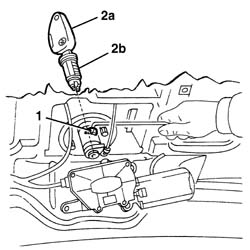

7015B36 lock block-r r
- Path
- Procedures > 70 FITTINGS > 7015 TAILGATE/ > 7015B tailgate locking/opening devices > 7015B36 lock block-r r
- Kind
- repair procedure (removal / refitting; the operation number is the code)
- Applies to
- all engines; all production periods
- Interactive page
- https://sloeber94.github.io/elrnDB-a156/en/#/3238713
Applies to: all engines; all production periods
Please note the following WARNING.
Applies to: all engines; all production periods; only with equipment: Station Wagon
 Removing
Removing
 Refitting
Refitting7040G36 BULB HOLDER FOR LOAD CARRYING COMPARTMENT lighting on tailgate - R.R.
7015A05 tail-gate lower interior panel-r r
1. Lift the retaining spring, as necessary, to release the lock barrel.
2. Insert the key (2a) in the lock barrel (2b) and withdraw it.

Applies to: all engines; all production periods; only with equipment: Station Wagon
Refitting
RemovingCheck that the lock barrel is undamaged.
Insert the key in the barrel.
Fit the lock barrel in its housing and engage the splining with the retaining spring.
Check that the barrel and the lock control mechanism are working properly.
7015A05 tail-gate lower interior panel-r r
7040G36 BULB HOLDER FOR LOAD CARRYING COMPARTMENT lighting on tailgate - R.R.
Topics linked from this page (3)
- 5580E anti-theft device
- 7015A05 tail-gate lower interior panel-r r
- 7040G36 BULB HOLDER FOR LOAD CARRYING COMPARTMENT lighting on tailgate - R.R.